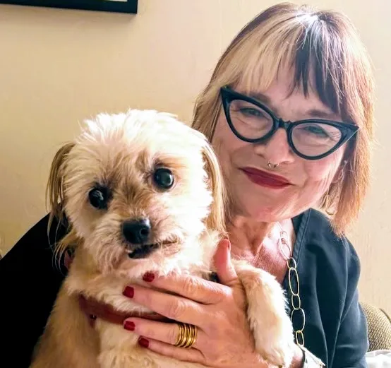

Meet Susan
Lifelong animal lover, trusted pet sitter, and proud companion to Dizzy, a rescue dog.

A Lifetime Around Animals
Susan grew up on an acre of land in Alpine, surrounded by animals. Chickens, dogs, cats, rabbits, and even a donkey were part of everyday life, and those experiences sparked a lifelong love of caring for animals.
Care Built on Patience
She has shared her life with dogs for more than 23 years and understands that every pet has its own personality, needs, and routines. Her current companion, Dizzy, is a lovable shelter rescue dog who continues to remind her why caring for animals is so rewarding.
Through years of pet ownership and animal care, Susan has learned the value of patience, compassion, and meeting animals where they are. Her goal is to provide thoughtful, dependable care that helps pets feel safe, comfortable, and loved while their families are away.